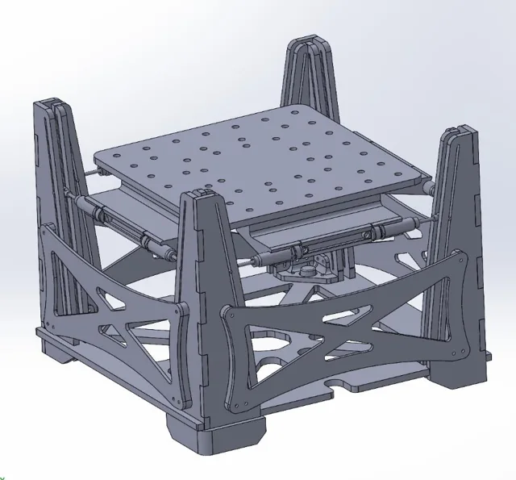

Moving beyond a search for spring and damper values
For ES125, Anna Burgess, Justice Hickman-Maynard, and I designed an egg-drop mechanism called M.O.D.E. The challenge was to slow a loaded carriage without breaking the egg, subject to limits on the overall mechanism.
We first tried computational searches over combinations of masses, springs, and dampers. After mixed results, I changed the approach: start from the deceleration history we wanted, then work backward to the geometry that could produce it.
Shaping the motion to shape the force
Using the specified drop height, carriage mass, and available travel, I considered a constant-deceleration trajectory. I wrote equations for a pin-and-slot mechanism that changed how quickly the dampers compressed as the carriage moved down the frame.
The slot angle changes the relationship between carriage movement and damper movement. I used that relationship to solve for a guide profile intended to keep the retarding force approximately constant. We modeled the profile in Python, brought it into CAD, and laser-cut the resulting geometry.

From the ideal curve to a real assembly
The design used eight dampers in parallel, a 1.05 kg carriage, and a frame with four tall guides. The final modeled configuration in our presentation did not include springs.
The CAD walkthrough shows the carriage, frame, and damper arrangement; the photographs show the physical laser-cut structure. The video is a model walkthrough, not footage of a drop test.
A second-place result and an incomplete constraint
Our team finished second out of about 50 groups. The important mechanical problem was that the upper carriage could rotate away from its intended alignment. That increased friction between the pins and slots and could make the carriage jam.
My model had assumed that friction there would be small. The physical assembly showed why that assumption was not enough: the top platform also needed to be constrained against the unwanted rotation. That would be my first mechanical change in a revised design.


{kind=link}
{kind=link}
{kind=link}